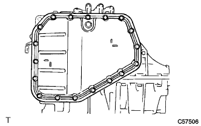
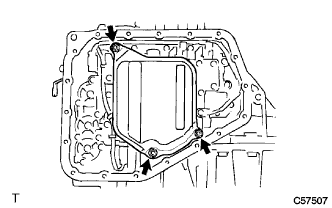

Transmission wire (U441E) Remove |
| 1. Remove the automatic trance axle ASSY |
reference)| 2. Automatic Transx Axle ASSY Fixed |
 |
Use a piece of wood to fix the oil pan side up and fix the automatic transxle.
| 3. Automatic transformer axle oil bread SUB-ASSY (ATM) |
|  |
Remove 18 bolts and remove two oil pan and 2 magnets.
| 4. Valve body oil strainer ASSY removes |
|  |
Remove the three bolts and remove the oil strainer.
Remove the gasket from the oil strainer.
| 5. Trans mission valve body ASSY is removed |
 |
Cut each connector and remove the oil temperature sensor from the clamp.
Remove 14 bolts.
 |
 |
Remove the link of the manual valve and remove the valve body ASSY.
| 6. Remove the transmission wire |
 |
Remove the bolt and remove the transmission wire (with oil temperature sensor).